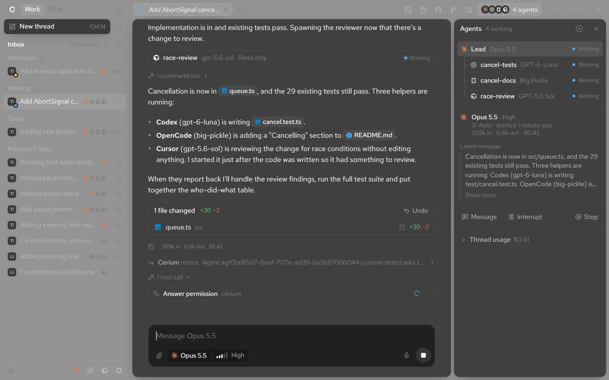
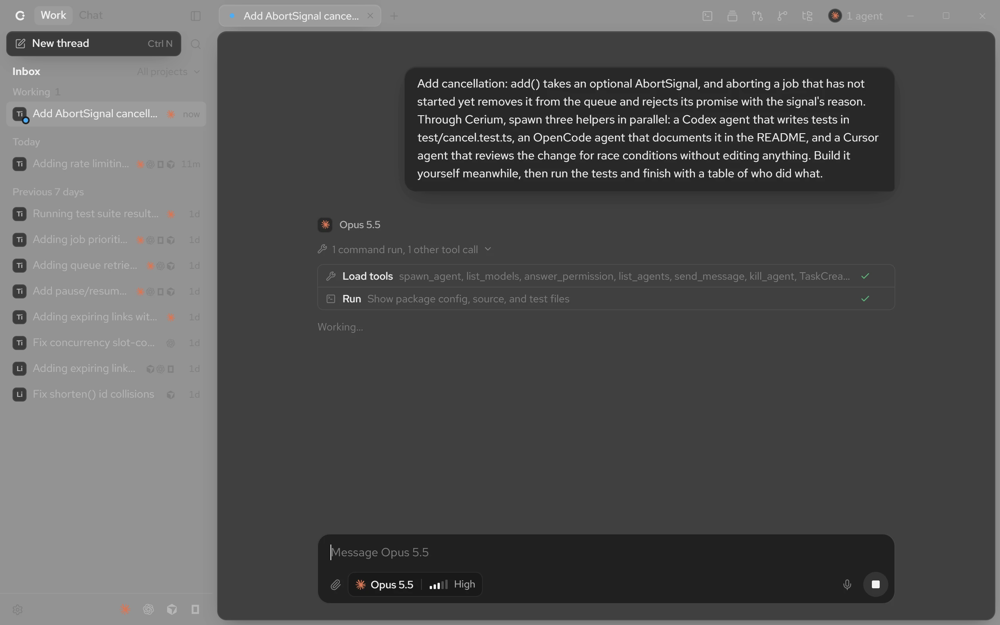
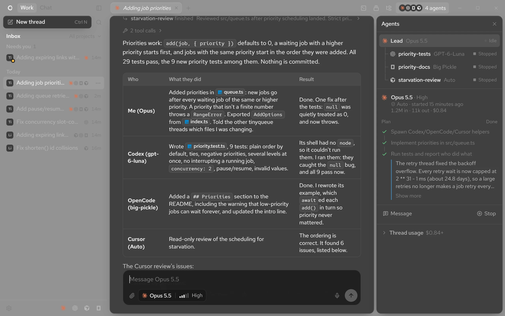
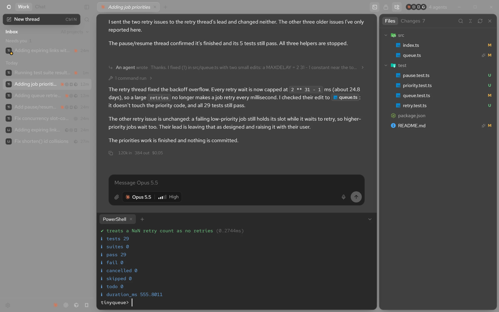
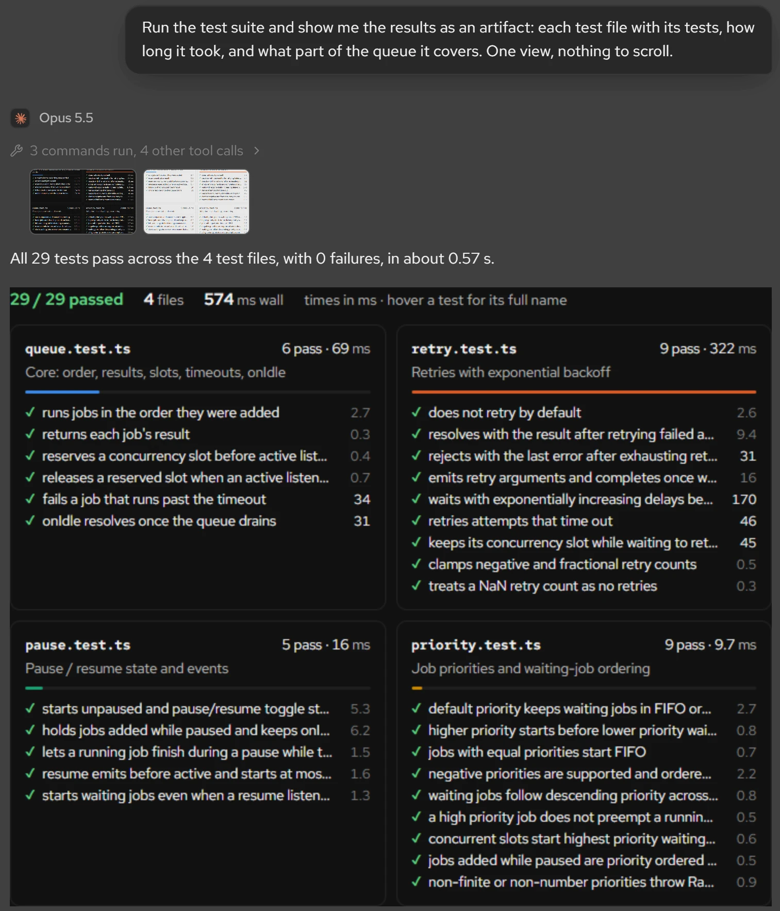

Answer from anywhere.
Sign in on your phone and your computers' threads come along. A notification says when an agent needs you.
Cerium runs Claude Code, Codex, Cursor and OpenCode side by side. Ask once, and your lead agent hands each piece to the one that does it best.
Free and open source. For Windows 10 and 11.

Cerium drives each harness through its official SDK, on your own plan. Your keys stay with the harness. Cerium never sees one.
Opus, Sonnet and Haiku, on your Claude plan.
OpenAI's models, on your ChatGPT plan.
Composer and every model Cursor offers.
Any of the providers OpenCode connects.
Every frame below is from one real thread in Cerium.
Describe the job in plain words. Name the agents you want, or let the lead choose.
Tests to Codex, docs to OpenCode, a review to Cursor. All three start at once.
Every agent's plan and progress, side by side. They warn each other before touching the same files.
The lead runs the tests, checks the work and tells you who did what.


The project, a terminal and every answer sit beside the thread. Your phone picks up where your desk left off.
Walk the folder with git's changes marked and run a terminal in it, without leaving the thread that's changing it.

Sign in on your phone and your computers' threads come along. A notification says when an agent needs you.

Agents answer with a chart, a table or a timeline, drawn right in the conversation.
Take a thread back to before any message, its files included.
Threads in one project stop changing each other's files.
Speak the request. Whisper turns it into text on your own machine.
Every plan's usage in one place, with a warning before it runs out.
Find a thread by anything said in it, or run any action.
Stable or nightly, checked at launch and every six hours.
Every theme is a glass you could hold, in light and dark.
Clear glass, with your desktop showing through.

Bring the agents you have.
Cerium is free, open source and runs on your own machine.
For Windows 10 and 11.